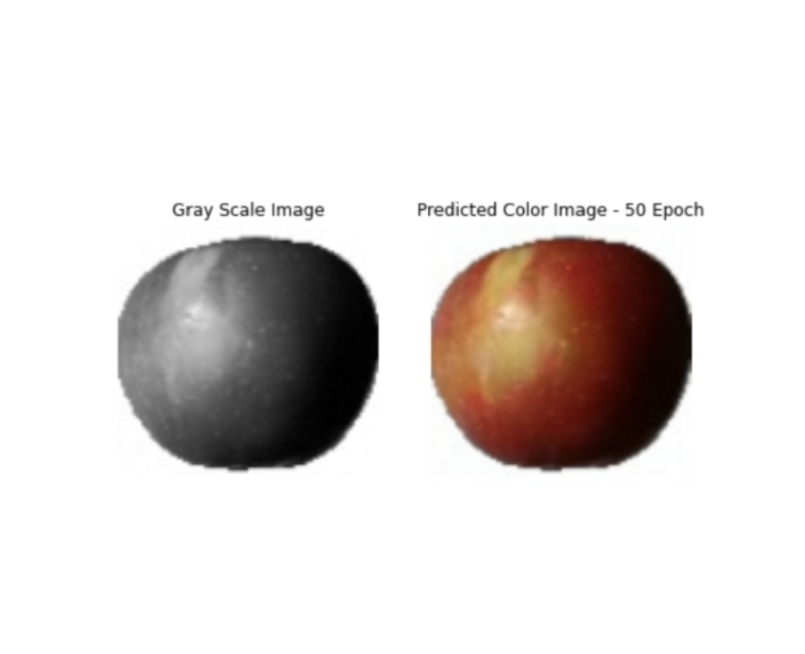

I'm currently working as an Enterprise Support Engineer at AWS. I previously worked at Barclays as Cloud and Infrastructure engineer in the Observability team at Barclays and my activities involved collaborating with infrastructure stakeholders, building pipelines and telling stories using data. I was a part of the Data Science by co-op at Allogene Therapeutics & have a Master's in Data Science. I have a strong interest in the intersection of Technology and Business.
University of Rochester, New York
IIIT Kottayam
Won 1st Place at University of Rochester's pitching competition
Selected to meet Senior Director from Jio Industries
Conducted 15+ events with 300+ students footprint
"IoT based Smart Medicine Reminder Kit"

A Deep learning based application that converts a Black and White (Grayscale) Image/Video into a Colour video without human guidance.
Digging through data and finding significant insights to advertise better products to customers of different backgrounds.
My inbox is always open. Whether you have a question or just want to say hi, I'll try my best to get back to you!
Mail me